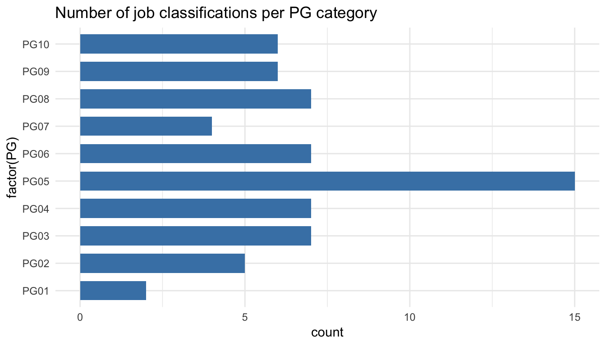

Chapter 19 Job classification analysis
Job classification is a way for objectively and accurately defining and evaluating the duties, responsibilities, tasks, and authority level of a job. When done correctly, the job classification is a thorough description of the job responsibilities of a position without regard to the knowledge, skills, experience, and education of the individuals currently performing the job.
Job classification is most frequently, formally performed in large companies, civil service and government employment, nonprofit organisations, colleges and universities. The approach used in these organizations is formal and structured.
One popular, commercial job classification system is the Hay Classification system. The Hay job classification system assigns points to evaluate job components to determine the relative value of a particular job to other jobs.
The primary goal of a job classification is to classify job descriptions into job classifications using the power of statistical algorithms to assist in predicting the best fit. The secondary goal can be to improve the design of our job classification framework.
##2.Collect And Manage Data
For purposes of this application of People Analytics, this step in the data science process will take the longest initially. This is because in almost every organization, the existing job classifications or categories, and the job descriptions themselves are not typically represented in numerical format suitable for statistical analysis. Sometimes, that which we are predicting- the pay grade is numeric because point methods are used in evaluation and different paygrades have different point ranges. But more often the job descriptions are narrative as are the job classification specs or summaries. For this blog article, we will assume that and delineate the steps required.
###Collecting The Data
The following are typical steps:
- Gather together the entire set of narrative, written job classification specifications.
- Review all of them to determine what the common denominators are- what the organization is paying attention to , to differentiate them from each other.
- For each of the common denominators, pay attention to descriptions of how much of that common denominator exists in each narrative, writing down the phrases that are used.
- For each common denominator, develop an ordinal scale which assigns numbers and places them in a ‘less to more’ order
- Create a datafile where each record (row) is one job classification, and where each column is either a common denominator or the job classification identifier or paygrade.
- Code each job classification narrative into the datafile recording their common denominator information and other pertinent categorical information.
####Gather together the entire set of narrative, written job classification specifications.
This initially represents the ‘total’ population of what will be a ‘known’ population. Ones that by definition represent the prescribed intended categories and levels of paygrades. These are going to be used to compare an ‘unknown’ population- unclassified job descriptions, to determine best fit. But before this can happen, we should have confidence that the job classifications themselves are well designed- since they will be the standard against which all job descriptions will be compared.
####Review all of them to determine what the common denominators are
Technically speaking, anything that appears in the narrative could be considered a feature that is a common denominator including the tasks, knowledges described. But few organizations have that level of automation in their job descriptions. So generally broader features are used to describe common denominators. Often they may include the following:
- Education Level
- Experience
- Organizational Impact
- Problem Solving
- Supervision Received
- Contact Level
- Financial Budget Responsibility
To be a common denominator they need to be mentioned or discernable in every job classification specification
####Pay attention to the descriptions of how much of that common denominator exists in each narrative
For each of the above common denominators ( if these are ones you use), go through each narrative identify where the common denominator is mentioned and write down the words used to describe how much of it exists. Go through you entire set of job classification specs and tabulate these for each common denominator and each class spec.
####For each common denominator, develop an ordinal scale
Ordinal means in order. You order the descriptions from less than to more than. Then apply a numerical indicator to it. 0 might mean it doesnt exist in any significant way, 1 might mean something at a low or introductory level, higher numbers meaning more of it. The scale should have as many numbers as distinguishable descriptions.(You may have to merge or collapse descriptions if it’s impossible to distinguish order)
####Create a datafile
This might be a spreadsheet.
each record(row) will be one job classification, and each column will be either a common denominator or the job classification identifier or paygrade or other categorical information.
####Code each job classification narrative into the datafile
Record their common denominator information and other pertinent categorical or identifying information. At the end of this task you will have as many records as you have written job classification specs.
At the end of this effort you will have something that looks like the data found at the following link:
Ensure all needed libraries are installed
library(tidyverse)
library(caret)Loading required package: lattice
Attaching package: 'caret'The following object is masked from 'package:httr':
progressThe following objects are masked from 'package:yardstick':
precision, recallThe following object is masked from 'package:purrr':
liftlibrary(rattle)Rattle: A free graphical interface for data science with R.
Version 5.2.0 Copyright (c) 2006-2018 Togaware Pty Ltd.
Type 'rattle()' to shake, rattle, and roll your data.
Attaching package: 'rattle'The following objects are masked _by_ '.GlobalEnv':
crv, weatherThe following object is masked from 'package:nycflights13':
weatherlibrary(rpart)
library(randomForest)randomForest 4.6-14Type rfNews() to see new features/changes/bug fixes.
Attaching package: 'randomForest'The following object is masked from 'package:rattle':
importanceThe following object is masked from 'package:ggplot2':
marginThe following object is masked from 'package:dplyr':
combinelibrary(kernlab)
Attaching package: 'kernlab'The following object is masked from 'package:scales':
alphaThe following object is masked from 'package:purrr':
crossThe following object is masked from 'package:ggplot2':
alphalibrary(nnet)
library(car)
library(rpart.plot)
library(pROC)Type 'citation("pROC")' for a citation.
Attaching package: 'pROC'The following objects are masked from 'package:stats':
cov, smooth, varlibrary(ada)###Manage The Data
In this step we check the data for errors, organize the data for model building, and take an initial look at what the data is telling us.
####Check the data for errors
MYdataset <- read_csv("https://https://hranalytics.netlify.com/data/jobclassinfo2.csv")str(MYdataset)Classes 'spec_tbl_df', 'tbl_df', 'tbl' and 'data.frame': 66 obs. of 14 variables:
$ ID : num 1 2 3 4 5 6 7 8 9 10 ...
$ JobFamily : num 1 1 1 1 2 2 2 2 2 3 ...
$ JobFamilyDescription: chr "Accounting And Finance" "Accounting And Finance" "Accounting And Finance" "Accounting And Finance" ...
$ JobClass : num 1 2 3 4 5 6 7 8 9 10 ...
$ JobClassDescription : chr "Accountant I" "Accountant II" "Accountant III" "Accountant IV" ...
$ PayGrade : num 5 6 8 10 1 2 3 4 5 4 ...
$ EducationLevel : num 3 4 4 5 1 1 1 4 4 2 ...
$ Experience : num 1 1 2 5 0 1 2 0 0 0 ...
$ OrgImpact : num 3 5 6 6 1 1 1 1 4 1 ...
$ ProblemSolving : num 3 4 5 6 1 1 2 2 3 4 ...
$ Supervision : num 4 5 6 7 1 1 1 1 5 1 ...
$ ContactLevel : num 3 7 7 8 1 2 3 3 7 1 ...
$ FinancialBudget : num 5 7 10 11 1 3 3 5 7 2 ...
$ PG : chr "PG05" "PG06" "PG08" "PG10" ...
- attr(*, "spec")=
.. cols(
.. ID = col_double(),
.. JobFamily = col_double(),
.. JobFamilyDescription = col_character(),
.. JobClass = col_double(),
.. JobClassDescription = col_character(),
.. PayGrade = col_double(),
.. EducationLevel = col_double(),
.. Experience = col_double(),
.. OrgImpact = col_double(),
.. ProblemSolving = col_double(),
.. Supervision = col_double(),
.. ContactLevel = col_double(),
.. FinancialBudget = col_double(),
.. PG = col_character()
.. )summary(MYdataset) ID JobFamily JobFamilyDescription JobClass
Min. : 1.0 Min. : 1.00 Length:66 Min. : 1.0
1st Qu.:17.2 1st Qu.: 4.00 Class :character 1st Qu.:17.2
Median :33.5 Median : 7.00 Mode :character Median :33.5
Mean :33.5 Mean : 7.61 Mean :33.5
3rd Qu.:49.8 3rd Qu.:11.00 3rd Qu.:49.8
Max. :66.0 Max. :15.00 Max. :66.0
JobClassDescription PayGrade EducationLevel Experience
Length:66 Min. : 1.0 Min. :1.00 Min. : 0.00
Class :character 1st Qu.: 4.0 1st Qu.:2.00 1st Qu.: 0.00
Mode :character Median : 5.0 Median :4.00 Median : 1.00
Mean : 5.7 Mean :3.17 Mean : 1.76
3rd Qu.: 8.0 3rd Qu.:4.00 3rd Qu.: 2.75
Max. :10.0 Max. :6.00 Max. :10.00
OrgImpact ProblemSolving Supervision ContactLevel FinancialBudget
Min. :1.00 Min. :1.00 Min. :1.00 Min. :1.00 Min. : 1.00
1st Qu.:2.00 1st Qu.:3.00 1st Qu.:1.00 1st Qu.:3.00 1st Qu.: 2.00
Median :3.00 Median :4.00 Median :4.00 Median :6.00 Median : 5.00
Mean :3.35 Mean :3.61 Mean :3.86 Mean :4.76 Mean : 5.30
3rd Qu.:4.00 3rd Qu.:5.00 3rd Qu.:5.75 3rd Qu.:7.00 3rd Qu.: 7.75
Max. :6.00 Max. :6.00 Max. :7.00 Max. :8.00 Max. :11.00
PG
Length:66
Class :character
Mode :character
On the surface there doesn’t seem to be any issues with data. This gives a summary of the layout of the data and the likely values we can expect. PG is the category we will predict. It’s a categorical representation of the numeric paygrade. Education level through Financial Budgeting Responsibility will be the independent variables/measures we will use to predict. The other columns in file will be ignored.
####Organize the data
Let’s narrow down the information to just the data used in the model.
MYnobs <- nrow(MYdataset) # The data set is made of 66 observations
MYsample <- MYtrain <- sample(nrow(MYdataset), 0.7*MYnobs) # 70% of those 66 observations (i.e. 46 observations) will form our training dataset.
MYvalidate <- sample(setdiff(seq_len(nrow(MYdataset)), MYtrain), 0.14*MYnobs) # 14% of those 66 observations (i.e. 9 observations) will form our validation dataset.
MYtest <- setdiff(setdiff(seq_len(nrow(MYdataset)), MYtrain), MYvalidate) # # The remaining observations (i.e. 11 observations) will form our test dataset.
# The following variable selections have been noted.
MYinput <- c("EducationLevel", "Experience", "OrgImpact", "ProblemSolving",
"Supervision", "ContactLevel", "FinancialBudget")
MYnumeric <- c("EducationLevel", "Experience", "OrgImpact", "ProblemSolving",
"Supervision", "ContactLevel", "FinancialBudget")
MYcategoric <- NULL
MYtarget <- "PG"
MYrisk <- NULL
MYident <- "ID"
MYignore <- c("JobFamily", "JobFamilyDescription", "JobClass", "JobClassDescription", "PayGrade")
MYweights <- NULLWe are predominantly interested in MYinput and MYtarget because they represent the predictors and what needs to be predicted respectively. You will notice for the time being that we are not partitioning the data. This will be elaborated upon in model building.
###What the data is initially telling us
MYdataset %>%
ggplot() +
aes(x = factor(PG)) +
geom_bar(stat = "count", width = 0.7, fill = "steelblue") +
theme_minimal() +
coord_flip() +
ggtitle("Number of job classifications per PG category") 
MYdataset %>%
ggplot() +
aes(x = factor(JobFamilyDescription)) +
geom_bar(stat = "count", width = 0.7, fill = "steelblue") +
theme_minimal() +
coord_flip() +
ggtitle("Number of job classifications per job family") MYdataset %>%
ggplot() +
aes(EducationLevel) +
geom_bar(stat = "count", width = 0.7, fill = "steelblue") +
ggtitle("Number of job classifications per Education level") MYdataset %>%
ggplot() +
aes(Experience) +
geom_bar(stat = "count", width = 0.7, fill = "steelblue") +
ggtitle("Number of job classifications per experience") MYdataset %>%
ggplot() +
aes(OrgImpact) +
geom_bar(stat = "count", width = 0.7, fill = "steelblue") +
ggtitle("Number of job classifications per organisational impact") MYdataset %>%
ggplot() +
aes(ProblemSolving) +
geom_bar(stat = "count", width = 0.7, fill = "steelblue") +
ggtitle("Number of job classifications per problem solving") MYdataset %>%
ggplot() +
aes(Supervision) +
geom_bar(stat = "count", width = 0.7, fill = "steelblue") +
ggtitle("Number of job classifications per supervision") MYdataset %>%
ggplot() +
aes(ContactLevel) +
geom_bar(stat = "count", width = 0.7, fill = "steelblue") +
ggtitle("Number of job classifications per contact level") Let’s use the caret library again for some graphical representations of this data.
library(caret)
MYdataset$PG <- as.factor(MYdataset$PG)
featurePlot(x = MYdataset[,7:13],
y = MYdataset$PG,
plot = "density",
auto.key = list(columns = 2))featurePlot(x = MYdataset[,7:13],
y = MYdataset$PG,
plot = "box",
auto.key = list(columns = 2))The first set of charts shows the distribution of the independent variable values (predictors) by PG.
The second set of charts show the range of values of the predictors by PG. PG is ordered left to right in ascending order from PG1 to PG10. In each of the predictors we would expect increasing levels as we move up the paygrades and from left to right (or at least not dropping from previous paygrade).
This is the first indication by a graphic ‘visual’ that we ‘may’ have problems in the data or the interpretation of the coding of the information. Then again the coding may be accurate based on our descriptions and our assumptions false. We will probably want to recheck our coding from the job description to make sure.
##3.Build The Model
Let’s use the rattle library to efficiently generate the code to run the following classification algorithms against our data:
- Decision Tree
- Random Forest
- Support Vector Machines
- Linear Regression Model
Please note that in our case we want to use the job description to predict the payscale grade (PG), so we make the formula (PG ~ .). In other words, we’re representing the relationship between payscale grades (PG) and the remaining variables (.).
###Decision Tree
# The 'rattle' package provides a graphical user interface to very many other packages that provide functionality for data mining.
library(rattle)
# The 'rpart' package provides the 'rpart' function.
library(rpart, quietly=TRUE)
# Reset the random number seed to obtain the same results each time.
crv$seed <- 42
set.seed(crv$seed)
# Build the Decision Tree model.
MYrpart <- rpart(PG ~ .,
data=MYdataset[, c(MYinput, MYtarget)],
method="class",
parms=list(split="information"),
control=rpart.control(minsplit=10,
minbucket=2,
maxdepth=10,
usesurrogate=0,
maxsurrogate=0))
# Generate a textual view of the Decision Tree model.
print(MYrpart)n= 66
node), split, n, loss, yval, (yprob)
* denotes terminal node
1) root 66 51 PG05 (0.03 0.076 0.11 0.11 0.23 0.11 0.061 0.11 0.091 0.091)
2) ProblemSolving< 4.5 47 32 PG05 (0.043 0.11 0.15 0.15 0.32 0.15 0.085 0 0 0)
4) ContactLevel< 5.5 32 21 PG05 (0.062 0.16 0.22 0.22 0.34 0 0 0 0 0)
8) EducationLevel< 1.5 15 9 PG03 (0.13 0.33 0.4 0.13 0 0 0 0 0 0)
16) ProblemSolving< 1.5 5 2 PG02 (0.4 0.6 0 0 0 0 0 0 0 0) *
17) ProblemSolving>=1.5 10 4 PG03 (0 0.2 0.6 0.2 0 0 0 0 0 0)
34) Experience< 0.5 3 1 PG02 (0 0.67 0 0.33 0 0 0 0 0 0) *
35) Experience>=0.5 7 1 PG03 (0 0 0.86 0.14 0 0 0 0 0 0) *
9) EducationLevel>=1.5 17 6 PG05 (0 0 0.059 0.29 0.65 0 0 0 0 0)
18) Experience< 0.5 8 3 PG04 (0 0 0 0.62 0.37 0 0 0 0 0) *
19) Experience>=0.5 9 1 PG05 (0 0 0.11 0 0.89 0 0 0 0 0) *
5) ContactLevel>=5.5 15 8 PG06 (0 0 0 0 0.27 0.47 0.27 0 0 0)
10) Experience< 2.5 12 5 PG06 (0 0 0 0 0.33 0.58 0.083 0 0 0)
20) ContactLevel>=6.5 8 4 PG05 (0 0 0 0 0.5 0.38 0.12 0 0 0) *
21) ContactLevel< 6.5 4 0 PG06 (0 0 0 0 0 1 0 0 0 0) *
11) Experience>=2.5 3 0 PG07 (0 0 0 0 0 0 1 0 0 0) *
3) ProblemSolving>=4.5 19 12 PG08 (0 0 0 0 0 0 0 0.37 0.32 0.32)
6) ProblemSolving< 5.5 13 6 PG08 (0 0 0 0 0 0 0 0.54 0.46 0)
12) ContactLevel>=6.5 10 3 PG08 (0 0 0 0 0 0 0 0.7 0.3 0) *
13) ContactLevel< 6.5 3 0 PG09 (0 0 0 0 0 0 0 0 1 0) *
7) ProblemSolving>=5.5 6 0 PG10 (0 0 0 0 0 0 0 0 0 1) *printcp(MYrpart)
Classification tree:
rpart(formula = PG ~ ., data = MYdataset[, c(MYinput, MYtarget)],
method = "class", parms = list(split = "information"), control = rpart.control(minsplit = 10,
minbucket = 2, maxdepth = 10, usesurrogate = 0, maxsurrogate = 0))
Variables actually used in tree construction:
[1] ContactLevel EducationLevel Experience ProblemSolving
Root node error: 51/66 = 0.8
n= 66
CP nsplit rel error xerror xstd
1 0.14 0 1.0 1.0 0.07
2 0.12 1 0.9 1.0 0.07
3 0.09 2 0.7 0.9 0.07
4 0.06 4 0.6 0.9 0.08
5 0.04 7 0.4 0.8 0.08
6 0.02 9 0.3 0.7 0.08
7 0.01 10 0.3 0.6 0.08cat("\n")###Random Forest
# The 'randomForest' package provides the 'randomForest' function.
library(randomForest, quietly=TRUE)
# Build the Random Forest model.
set.seed(crv$seed)
MYrf <- randomForest::randomForest(PG ~ ., # PG ~ .
data=MYdataset[,c(MYinput, MYtarget)],
ntree=500,
mtry=2,
importance=TRUE,
na.action=randomForest::na.roughfix,
replace=FALSE)
# Generate textual output of 'Random Forest' model.
MYrf
Call:
randomForest(formula = PG ~ ., data = MYdataset[, c(MYinput, MYtarget)], ntree = 500, mtry = 2, importance = TRUE, replace = FALSE, na.action = randomForest::na.roughfix)
Type of random forest: classification
Number of trees: 500
No. of variables tried at each split: 2
OOB estimate of error rate: 42.4%
Confusion matrix:
PG01 PG02 PG03 PG04 PG05 PG06 PG07 PG08 PG09 PG10 class.error
PG01 0 2 0 0 0 0 0 0 0 0 1.000
PG02 0 4 1 0 0 0 0 0 0 0 0.200
PG03 0 0 4 2 1 0 0 0 0 0 0.429
PG04 0 0 1 2 4 0 0 0 0 0 0.714
PG05 0 0 0 3 10 2 0 0 0 0 0.333
PG06 0 0 0 0 1 5 1 0 0 0 0.286
PG07 0 0 0 0 0 2 2 0 0 0 0.500
PG08 0 0 0 0 0 0 0 4 2 1 0.429
PG09 0 0 0 0 0 0 0 5 1 0 0.833
PG10 0 0 0 0 0 0 0 0 0 6 0.000# List the importance of the variables.
rn <- round(randomForest::importance(MYrf), 2)
rn[order(rn[,3], decreasing=TRUE),] PG01 PG02 PG03 PG04 PG05 PG06 PG07 PG08 PG09 PG10
EducationLevel 2.85 14.92 11.36 5.05 7.93 1.73 5.19 3.56 -5.47 8.60
ProblemSolving 3.65 5.98 8.96 1.51 8.91 13.08 7.66 12.60 10.04 19.57
Experience -4.68 9.85 8.70 5.32 0.66 5.99 8.10 -5.70 4.12 3.11
Supervision -2.86 9.78 5.45 2.44 9.26 3.57 0.77 3.33 2.03 16.36
ContactLevel 2.46 13.33 3.70 2.45 4.03 10.09 4.65 11.16 -0.97 12.24
OrgImpact -2.70 11.72 3.65 0.58 12.85 2.37 5.22 1.86 6.10 10.58
FinancialBudget 1.74 6.18 2.05 -1.03 9.37 0.87 -0.52 -4.66 10.82 15.78
MeanDecreaseAccuracy MeanDecreaseGini
EducationLevel 18.4 4.33
ProblemSolving 24.2 6.26
Experience 13.8 4.30
Supervision 17.5 4.01
ContactLevel 19.1 4.97
OrgImpact 15.8 3.57
FinancialBudget 15.5 5.17###Support Vector Machine
# The 'kernlab' package provides the 'ksvm' function.
library(kernlab, quietly=TRUE)
# Build a Support Vector Machine model.
#set.seed(crv$seed)
MYksvm <- ksvm(as.factor(PG) ~ .,
data=MYdataset[,c(MYinput, MYtarget)],
kernel="rbfdot",
prob.model=TRUE)
# Generate a textual view of the SVM model.
MYksvmSupport Vector Machine object of class "ksvm"
SV type: C-svc (classification)
parameter : cost C = 1
Gaussian Radial Basis kernel function.
Hyperparameter : sigma = 0.204641645342499
Number of Support Vectors : 64
Objective Function Value : -3.8 -3.59 -2.76 -2.16 -1.52 -1.35 -1.46 -1.58 -1.44 -7.27 -3.85 -2.33 -1.58 -1.34 -1.44 -1.57 -1.42 -7.86 -6.05 -2.9 -2.18 -1.97 -2.22 -1.86 -9.79 -3.69 -2.4 -2.21 -2.6 -2.03 -9.63 -6.2 -3.8 -3.88 -2.43 -7.57 -5.2 -4.53 -2.28 -4.36 -3.68 -2.05 -9.62 -5.47 -5.93
Training error : 0.272727
Probability model included. ###Linear Regression Model
# Build a multinomial model using the nnet package.
library(nnet, quietly=TRUE)
# Summarise multinomial model using Anova from the car package.
library(car, quietly=TRUE)
# Build a Regression model.
MYglm <- multinom(PG ~ ., data=MYdataset[,c(MYinput, MYtarget)], trace=FALSE, maxit=1000)
# Generate a textual view of the Linear model.
rattle.print.summary.multinom(summary(MYglm,
Wald.ratios=TRUE))Call:
multinom(formula = PG ~ ., data = MYdataset[, c(MYinput, MYtarget)],
trace = FALSE, maxit = 1000)
n=66
Coefficients:
(Intercept) EducationLevel Experience OrgImpact ProblemSolving Supervision
PG02 31771 -29734 -10119 -31945 23033 -3851
PG03 5206 -14081 17724 -23584 27756 -8030
PG04 -12720 3766 -5800 -12045 18647 -1211
PG05 -29409 5197 1461 -12659 21678 -3157
PG06 -65350 5416 1341 -10218 28024 -3563
PG07 -55538 5414 1343 -10220 25568 -3562
PG08 -125709 6237 576 -13989 42756 -1874
PG09 -98381 -14520 8754 -8737 -22041 21202
PG10 -202742 9246 770 -15582 55269 -2791
ContactLevel FinancialBudget
PG02 -3488 14215
PG03 4081 -2146
PG04 -4086 6195
PG05 -993 5793
PG06 -751 6300
PG07 -748 6300
PG08 -1736 7314
PG09 -12821 34337
PG10 1160 5999
Std. Errors:
(Intercept) EducationLevel Experience
PG02 0.17496346298458487 0.17496346298458715 0.00000000000000000
PG03 0.00000000000000000 0.00000000000000000 0.00000000000000000
PG04 0.00000000000000000 0.00000000000000131 0.00000000000000666
PG05 0.00000000000000699 NaN NaN
PG06 0.38593687751878936 1.39727636223561258 0.66504918981125904
PG07 0.38593687751879002 1.39727636223554974 0.66504918981126993
PG08 0.00000000000000000 0.00000000000000000 0.00000000000000000
PG09 0.00000000000000000 0.00000000000000000 0.00000000000000000
PG10 0.00000000000000000 0.00000000000000000 0.00000000000000000
OrgImpact ProblemSolving Supervision ContactLevel
PG02 0.17496346298458712 0.17496346298458712 0.17496346298458712 0.175
PG03 0.00000000000000000 0.00000000000000000 0.00000000000000000 0.000
PG04 NaN NaN 0.00000000000000182 NaN
PG05 0.00000000000000226 0.00000000000000431 0.00000000000000233 NaN
PG06 1.36643562381712980 1.54374751007515743 0.88091020150123389 1.298
PG07 1.36643562381711337 1.54374751007516009 0.88091020150123389 1.298
PG08 0.00000000000000000 0.00000000000000000 0.00000000000000000 0.000
PG09 0.00000000000000000 0.00000000000000000 0.00000000000000000 0.000
PG10 0.00000000000000000 0.00000000000000000 0.00000000000000000 0.000
FinancialBudget
PG02 0.17496346298458712
PG03 0.00000000000000000
PG04 0.00000000000000340
PG05 0.00000000000000219
PG06 0.32166590744913076
PG07 0.32166590744916068
PG08 0.00000000000000000
PG09 0.00000000000000000
PG10 0.00000000000000000
Value/SE (Wald statistics):
(Intercept) EducationLevel Experience
PG02 181587 -169946 -Inf
PG03 Inf -Inf Inf
PG04 -Inf 2869720290114926080 -871512196597339136
PG05 -4208083855036961280 NaN NaN
PG06 -169329 3876 2016
PG07 -143904 3875 2019
PG08 -Inf Inf Inf
PG09 -Inf -Inf Inf
PG10 -Inf Inf Inf
OrgImpact ProblemSolving Supervision ContactLevel
PG02 -182581 131643 -22009 -19938
PG03 -Inf Inf -Inf Inf
PG04 NaN NaN -664480765017337984 NaN
PG05 -5599281614335967232 5033728504871165952 -1354661454899906304 NaN
PG06 -7478 18153 -4045 -578
PG07 -7479 16562 -4044 -576
PG08 -Inf Inf -Inf -Inf
PG09 -Inf -Inf Inf -Inf
PG10 -Inf Inf -Inf Inf
FinancialBudget
PG02 81247
PG03 -Inf
PG04 1819986909030393856
PG05 2645452088465043968
PG06 19585
PG07 19585
PG08 Inf
PG09 Inf
PG10 Inf
Residual Deviance: 13.1
AIC: 157 cat(sprintf("Log likelihood: %.3f (%d df)
", logLik(MYglm)[1], attr(logLik(MYglm), "df")))Log likelihood: -6.545 (72 df)if (is.null(MYglm$na.action)) omitted <- TRUE else omitted <- -MYglm$na.action
cat(sprintf("Pseudo R-Square: %.8f
",cor(apply(MYglm$fitted.values, 1, function(x) which(x == max(x))),
as.integer(MYdataset[omitted,]$PG))))Pseudo R-Square: 0.99516038cat('==== ANOVA ====')==== ANOVA ====print(Anova(MYglm))Analysis of Deviance Table (Type II tests)
Response: PG
LR Chisq Df Pr(>Chisq)
EducationLevel 14.34 9 0.111
Experience 24.21 9 0.004 **
OrgImpact 1.61 9 0.996
ProblemSolving 21.11 9 0.012 *
Supervision 2.92 9 0.967
ContactLevel 4.86 9 0.847
FinancialBudget 5.55 9 0.784
---
Signif. codes: 0 '***' 0.001 '**' 0.01 '*' 0.05 '.' 0.1 ' ' 1Now let’s plot the Decision Tree
###Decision Tree Plot
# Plot the resulting Decision Tree.
# We use the rpart.plot package.
fancyRpartPlot(MYrpart, main="Decision Tree MYdataset $ PG")A readable view of the decision tree can be found at the following pdf:
##4.Evaluation of the best fitting model
###Evaluate
In the following we will evaluate the best fitting model creating a confusion matrix. A confusion matrix is a specific table layout that allows visualization of the performance of an algorithm. Each row of the matrix represents the instances in a predicted class while each column represents the instances in an actual class (or vice versa). The name stems from the fact that it makes it easy to see if the system is confusing two classes (i.e. commonly mislabeling one as another).
####Decision Tree
# Predict new job classsifications utilising the Decision Tree model.
MYpr <- predict(MYrpart, newdata=MYdataset[,c(MYinput, MYtarget)], type="class")
# Generate the confusion matrix showing counts.
table(MYdataset[,c(MYinput, MYtarget)]$PG, MYpr,
dnn=c("Actual", "Predicted")) Predicted
Actual PG01 PG02 PG03 PG04 PG05 PG06 PG07 PG08 PG09 PG10
PG01 0 2 0 0 0 0 0 0 0 0
PG02 0 5 0 0 0 0 0 0 0 0
PG03 0 0 6 0 1 0 0 0 0 0
PG04 0 1 1 5 0 0 0 0 0 0
PG05 0 0 0 3 12 0 0 0 0 0
PG06 0 0 0 0 3 4 0 0 0 0
PG07 0 0 0 0 1 0 3 0 0 0
PG08 0 0 0 0 0 0 0 7 0 0
PG09 0 0 0 0 0 0 0 3 3 0
PG10 0 0 0 0 0 0 0 0 0 6# Generate the confusion matrix showing proportions and misclassification error in the last column. Misclassification error, represents how often is the prediction wrong,
pcme <- function(actual, cl)
{
x <- table(actual, cl)
nc <- nrow(x)
tbl <- cbind(x/length(actual),
Error=sapply(1:nc,
function(r) round(sum(x[r,-r])/sum(x[r,]), 2)))
names(attr(tbl, "dimnames")) <- c("Actual", "Predicted")
return(tbl)
}
per <- pcme(MYdataset[,c(MYinput, MYtarget)]$PG, MYpr)
round(per, 2) Predicted
Actual PG01 PG02 PG03 PG04 PG05 PG06 PG07 PG08 PG09 PG10 Error
PG01 0 0.03 0.00 0.00 0.00 0.00 0.00 0.00 0.00 0.00 1.00
PG02 0 0.08 0.00 0.00 0.00 0.00 0.00 0.00 0.00 0.00 0.00
PG03 0 0.00 0.09 0.00 0.02 0.00 0.00 0.00 0.00 0.00 0.14
PG04 0 0.02 0.02 0.08 0.00 0.00 0.00 0.00 0.00 0.00 0.29
PG05 0 0.00 0.00 0.05 0.18 0.00 0.00 0.00 0.00 0.00 0.20
PG06 0 0.00 0.00 0.00 0.05 0.06 0.00 0.00 0.00 0.00 0.43
PG07 0 0.00 0.00 0.00 0.02 0.00 0.05 0.00 0.00 0.00 0.25
PG08 0 0.00 0.00 0.00 0.00 0.00 0.00 0.11 0.00 0.00 0.00
PG09 0 0.00 0.00 0.00 0.00 0.00 0.00 0.05 0.05 0.00 0.50
PG10 0 0.00 0.00 0.00 0.00 0.00 0.00 0.00 0.00 0.09 0.00# First we calculate the overall miscalculation rate (also known as error rate or percentage error).
#Please note that diag(per) extracts the diagonal of confusion matrix.
cat(100*round(1-sum(diag(per), na.rm=TRUE), 2)) # 23%23# Calculate the averaged miscalculation rate for each job classification.
# per[,"Error"] extracts the last column, which represents the miscalculation rate per.
cat(100*round(mean(per[,"Error"], na.rm=TRUE), 2)) # 28%28####Random Forest
# Generate the Confusion Matrix for the Random Forest model.
# Obtain the response from the Random Forest model.
MYpr <- predict(MYrf, newdata=na.omit(MYdataset[,c(MYinput, MYtarget)]))
# Generate the confusion matrix showing counts.
table(na.omit(MYdataset[,c(MYinput, MYtarget)])$PG, MYpr,
dnn=c("Actual", "Predicted")) Predicted
Actual PG01 PG02 PG03 PG04 PG05 PG06 PG07 PG08 PG09 PG10
PG01 1 1 0 0 0 0 0 0 0 0
PG02 0 5 0 0 0 0 0 0 0 0
PG03 0 0 7 0 0 0 0 0 0 0
PG04 0 0 0 7 0 0 0 0 0 0
PG05 0 0 0 0 15 0 0 0 0 0
PG06 0 0 0 0 0 7 0 0 0 0
PG07 0 0 0 0 0 1 3 0 0 0
PG08 0 0 0 0 0 0 0 7 0 0
PG09 0 0 0 0 0 0 0 1 5 0
PG10 0 0 0 0 0 0 0 0 0 6# Generate the confusion matrix showing proportions.
pcme <- function(actual, cl)
{
x <- table(actual, cl)
nc <- nrow(x)
tbl <- cbind(x/length(actual),
Error=sapply(1:nc,
function(r) round(sum(x[r,-r])/sum(x[r,]), 2)))
names(attr(tbl, "dimnames")) <- c("Actual", "Predicted")
return(tbl)
}
per <- pcme(na.omit(MYdataset[,c(MYinput, MYtarget)])$PG, MYpr)
round(per, 2) Predicted
Actual PG01 PG02 PG03 PG04 PG05 PG06 PG07 PG08 PG09 PG10 Error
PG01 0.02 0.02 0.00 0.00 0.00 0.00 0.00 0.00 0.00 0.00 0.50
PG02 0.00 0.08 0.00 0.00 0.00 0.00 0.00 0.00 0.00 0.00 0.00
PG03 0.00 0.00 0.11 0.00 0.00 0.00 0.00 0.00 0.00 0.00 0.00
PG04 0.00 0.00 0.00 0.11 0.00 0.00 0.00 0.00 0.00 0.00 0.00
PG05 0.00 0.00 0.00 0.00 0.23 0.00 0.00 0.00 0.00 0.00 0.00
PG06 0.00 0.00 0.00 0.00 0.00 0.11 0.00 0.00 0.00 0.00 0.00
PG07 0.00 0.00 0.00 0.00 0.00 0.02 0.05 0.00 0.00 0.00 0.25
PG08 0.00 0.00 0.00 0.00 0.00 0.00 0.00 0.11 0.00 0.00 0.00
PG09 0.00 0.00 0.00 0.00 0.00 0.00 0.00 0.02 0.08 0.00 0.17
PG10 0.00 0.00 0.00 0.00 0.00 0.00 0.00 0.00 0.00 0.09 0.00# Calculate the overall error percentage.
cat(100*round(1-sum(diag(per), na.rm=TRUE), 2))5# Calculate the averaged class error percentage.
cat(100*round(mean(per[,"Error"], na.rm=TRUE), 2))9####Support Vector Machine
# Generate the Confusion Matrix for the SVM model.
# Obtain the response from the SVM model.
MYpr <- kernlab::predict(MYksvm, newdata=na.omit(MYdataset[,c(MYinput, MYtarget)]))
# Generate the confusion matrix showing counts.
table(na.omit(MYdataset[,c(MYinput, MYtarget)])$PG, MYpr,
dnn=c("Actual", "Predicted")) Predicted
Actual PG01 PG02 PG03 PG04 PG05 PG06 PG07 PG08 PG09 PG10
PG01 0 1 1 0 0 0 0 0 0 0
PG02 0 5 0 0 0 0 0 0 0 0
PG03 0 2 3 1 1 0 0 0 0 0
PG04 0 0 0 6 1 0 0 0 0 0
PG05 0 0 0 1 13 1 0 0 0 0
PG06 0 0 0 0 1 6 0 0 0 0
PG07 0 0 0 0 0 4 0 0 0 0
PG08 0 0 0 0 0 0 0 7 0 0
PG09 0 0 0 0 0 0 0 4 2 0
PG10 0 0 0 0 0 0 0 0 0 6# Generate the confusion matrix showing proportions.
pcme <- function(actual, cl)
{
x <- table(actual, cl)
nc <- nrow(x)
tbl <- cbind(x/length(actual),
Error=sapply(1:nc,
function(r) round(sum(x[r,-r])/sum(x[r,]), 2)))
names(attr(tbl, "dimnames")) <- c("Actual", "Predicted")
return(tbl)
}
per <- pcme(na.omit(MYdataset[,c(MYinput, MYtarget)])$PG, MYpr)
round(per, 2) Predicted
Actual PG01 PG02 PG03 PG04 PG05 PG06 PG07 PG08 PG09 PG10 Error
PG01 0 0.02 0.02 0.00 0.00 0.00 0 0.00 0.00 0.00 1.00
PG02 0 0.08 0.00 0.00 0.00 0.00 0 0.00 0.00 0.00 0.00
PG03 0 0.03 0.05 0.02 0.02 0.00 0 0.00 0.00 0.00 0.57
PG04 0 0.00 0.00 0.09 0.02 0.00 0 0.00 0.00 0.00 0.14
PG05 0 0.00 0.00 0.02 0.20 0.02 0 0.00 0.00 0.00 0.13
PG06 0 0.00 0.00 0.00 0.02 0.09 0 0.00 0.00 0.00 0.14
PG07 0 0.00 0.00 0.00 0.00 0.06 0 0.00 0.00 0.00 1.00
PG08 0 0.00 0.00 0.00 0.00 0.00 0 0.11 0.00 0.00 0.00
PG09 0 0.00 0.00 0.00 0.00 0.00 0 0.06 0.03 0.00 0.67
PG10 0 0.00 0.00 0.00 0.00 0.00 0 0.00 0.00 0.09 0.00# Calculate the overall error percentage.
cat(100*round(1-sum(diag(per), na.rm=TRUE), 2))27# Calculate the averaged class error percentage.
cat(100*round(mean(per[,"Error"], na.rm=TRUE), 2))36####Linear regression model
# Generate the confusion matrix for the linear regression model.
# Obtain the response from the Linear model.
MYpr <- predict(MYglm, newdata=MYdataset[,c(MYinput, MYtarget)])
# Generate the confusion matrix showing counts.
table(MYdataset[,c(MYinput, MYtarget)]$PG, MYpr,
dnn=c("Actual", "Predicted")) Predicted
Actual PG01 PG02 PG03 PG04 PG05 PG06 PG07 PG08 PG09 PG10
PG01 1 1 0 0 0 0 0 0 0 0
PG02 0 5 0 0 0 0 0 0 0 0
PG03 0 0 7 0 0 0 0 0 0 0
PG04 0 0 0 7 0 0 0 0 0 0
PG05 0 0 0 0 15 0 0 0 0 0
PG06 0 0 0 0 0 6 1 0 0 0
PG07 0 0 0 0 0 2 2 0 0 0
PG08 0 0 0 0 0 0 0 7 0 0
PG09 0 0 0 0 0 0 0 0 6 0
PG10 0 0 0 0 0 0 0 0 0 6# Generate the confusion matrix showing proportions.
pcme <- function(actual, cl)
{
x <- table(actual, cl)
nc <- nrow(x)
tbl <- cbind(x/length(actual),
Error=sapply(1:nc,
function(r) round(sum(x[r,-r])/sum(x[r,]), 2)))
names(attr(tbl, "dimnames")) <- c("Actual", "Predicted")
return(tbl)
}
per <- pcme(MYdataset[,c(MYinput, MYtarget)]$PG, MYpr)
round(per, 2) Predicted
Actual PG01 PG02 PG03 PG04 PG05 PG06 PG07 PG08 PG09 PG10 Error
PG01 0.02 0.02 0.00 0.00 0.00 0.00 0.00 0.00 0.00 0.00 0.50
PG02 0.00 0.08 0.00 0.00 0.00 0.00 0.00 0.00 0.00 0.00 0.00
PG03 0.00 0.00 0.11 0.00 0.00 0.00 0.00 0.00 0.00 0.00 0.00
PG04 0.00 0.00 0.00 0.11 0.00 0.00 0.00 0.00 0.00 0.00 0.00
PG05 0.00 0.00 0.00 0.00 0.23 0.00 0.00 0.00 0.00 0.00 0.00
PG06 0.00 0.00 0.00 0.00 0.00 0.09 0.02 0.00 0.00 0.00 0.14
PG07 0.00 0.00 0.00 0.00 0.00 0.03 0.03 0.00 0.00 0.00 0.50
PG08 0.00 0.00 0.00 0.00 0.00 0.00 0.00 0.11 0.00 0.00 0.00
PG09 0.00 0.00 0.00 0.00 0.00 0.00 0.00 0.00 0.09 0.00 0.00
PG10 0.00 0.00 0.00 0.00 0.00 0.00 0.00 0.00 0.00 0.09 0.00# Calculate the overall error percentage.
cat(100*round(1-sum(diag(per), na.rm=TRUE), 2))6# Calculate the averaged class error percentage.
cat(100*round(mean(per[,"Error"], na.rm=TRUE), 2))1119.0.1 Final evaluation of the various models
It turns out that:
- The model that performed best was Random Forests at 2% error
- The linear model was next at 6% error.
- Support Vector Machines performed less well at 18% error.
- Decision trees, while being able to give us a ‘visual’ representation of what rules are being used, performed worst of all at 23% error.
While the above results were found on just the job classification specs, it would be wise to have a much larger population before deciding which model to deploy in real life.
Another observation: You noticed in the results of the various models, that some model had predictions that were one or two paygrades off ‘higher or lower’ than the actual existing paygrade.
In a practical sense, this might mean:
- these might be candidates for determining whether criteria/features for these pay grades should be redefined
- and or whether there are, in reality, fewer categories needed.
We could extend our analysis and modelling to ‘cluster’ analysis. This would create a newer grouping based on the existing characteristics, and then the classification algorithms could be rerun to see if there was any improvement.
Some articles on People Analytics suggest that on a ‘maturity level’ basis, the step/stage beyond prediction is ‘experimental design’. If we are using our results to modify our design of our systems to predict better, that might be an example of this.
##5.Deploy the model
The easiest way to deploying our model, is to run your unknown data with the model.
Here, is the unclassified dataset:
Put the data in a separate dataset and run the following R commands:
DeployDataset <- read_csv("https://hranalytics.netlify.com/data/Deploydata.csv")DeployDataset# A tibble: 1 x 7
EducationLevel Experience OrgImpact ProblemSolving Supervision ContactLevel
<dbl> <dbl> <dbl> <dbl> <dbl> <dbl>
1 2 0 3 4 1 5
# … with 1 more variable: FinancialBudget <dbl>PredictedJobGrade <- predict(MYrf, newdata=DeployDataset)
PredictedJobGrade 1
PG05
Levels: PG01 PG02 PG03 PG04 PG05 PG06 PG07 PG08 PG09 PG10The DeployDataset represents the information coded from a single job description (paygrade not known). PredictedJobGrade compares the coded values against the MYrf (random forest model) and the prediction is determined. In this case, the job description predicts PG05.